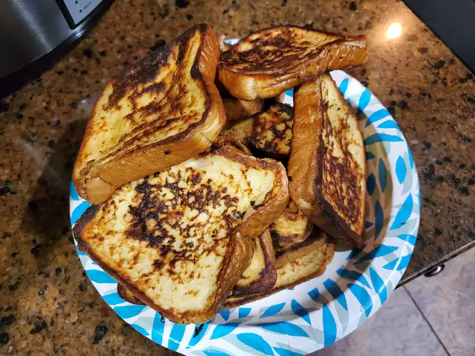

Fluffy French Toast

This is the best French toast recipe. It's different because it uses flour. I have given it to some friends
and they've all liked it better than the French toast they usually make!
Ingredients
- ¼ cup all-purpose flour
- 1 cup milk
- 3 eggs
- 1 tablespoon white sugar
- 1 teaspoon vanilla extract
- ½ teaspoon ground cinnamon
- 1 pinch salt
- 12 thick slices bread